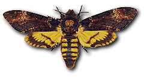

Az éjjeli lepke jellemzõi
Az éjjeli lepkék olyan változatosak, hogy nehéz általános leírást adni róluk. Sok közülük nappal is repül. Csápjuk általában fonalas vagy fésûs, és hiányzik róla a bunkó. Többségüknek elülsõ és hátulsó szárnyát egy kapcsoló készülék fogja össze. Ennek felépítése többnyire olyan, hogy a hátsó szárny tövén elhelyezkedõ egy vagy több akasztótüske az elülsõ szárnyon levõ akasztóba kapaszkodik bele. A hímeknek egyetlen erõteljes, a nõstényeknek pedig számos, vékony akasztótüskéje van.